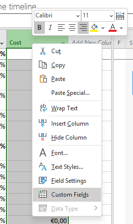
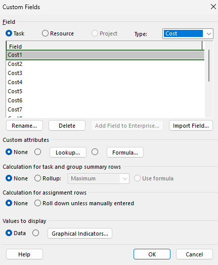
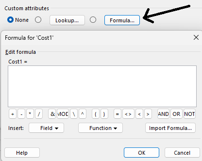
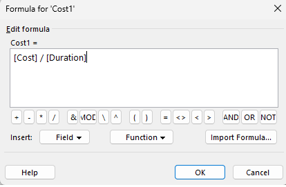
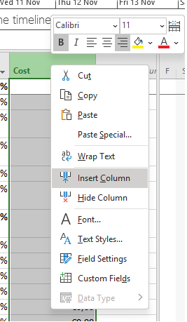
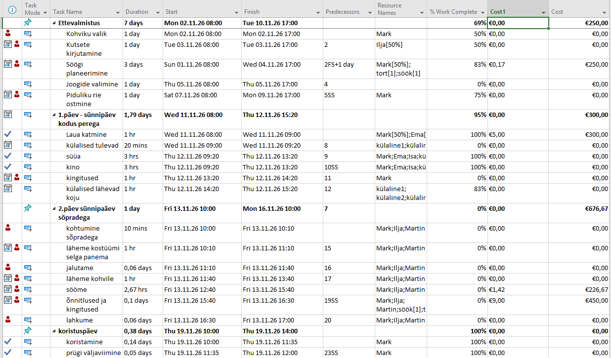

1. Ava väljahaldus
Projekti vaates paremklõpsa veeru päisel ja vali „Custom Fields" (Kohandatud väljad), et avada väljade haldamise aken.

2. Vali välja tüüp
Vali rippmenüüst sobiv välja tüüp – näiteks „Number" (arv) või „Cost" (kulu). Seejärel vajuta „Rename", et anda väljale mõistlik nimi.

3. Loo valem
Vajuta nuppu „Formula" (Valem). Avaneb valemiredaktor, kus saad kasutada MS Projecti sisseehitatud funktsioone ja välju.

4. Sisesta valem
Kirjuta valem käsitsi või kasuta „Field" ja „Function" nuppe. Näiteks kulu ja kestuse suhtarvu arvutamiseks: [Cost] / [Duration]

5. Kinnita valem
Vajuta „OK" ja seejärel uuesti „OK" Custom Fields aknas. Project kontrollib automaatselt valemit – kui on vigu, kuvatakse veateade.
6. Lisa veerg tabelisse
Paremklõpsa mõnel veerupäisel → „Insert Column" → otsi oma kohandatud välja nimi. Veerg ilmub tabelisse automaatselt arvutatud väärtustega.

7. Kontrolli tulemust
Vaata, et kõikidel ülesannetel oleks uues veerus arvutatud väärtus.
